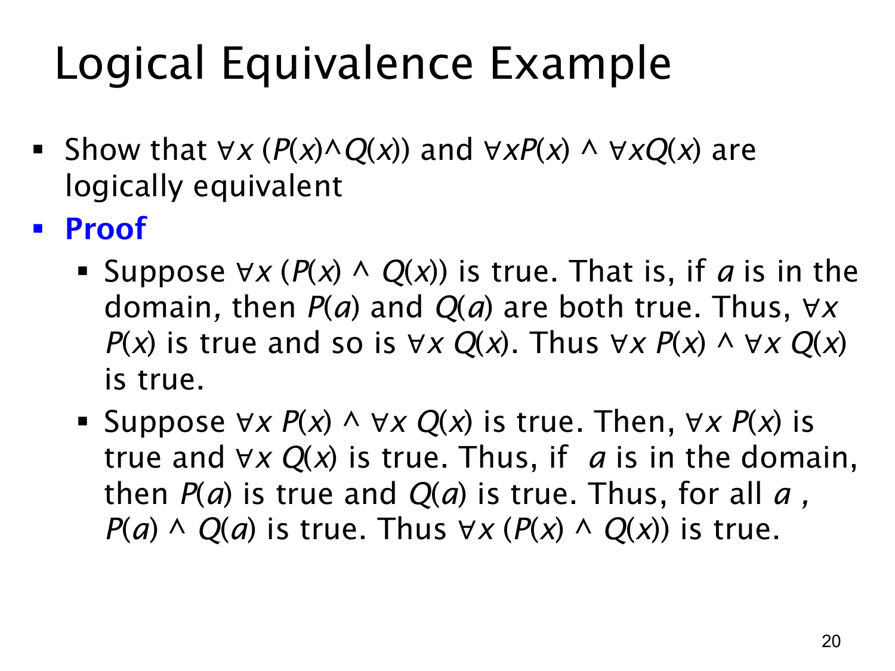

L1.2 · 第 20 页讲解原文
查看这一页课件

量词等价例题：全称量词与合取
本页证明下面两个式子逻辑等价：
∀x(P(x)∧Q(x))≡(∀xP(x))∧(∀xQ(x)).
左式说“每个对象同时满足 P 和 Q”；右式说“每个对象满足 P，并且每个对象满足 Q”。两种说法看起来相同，但课件用两个方向的推理正式证明。
先假设左式真。任取论域中的对象 a，由左式可知 P(a)∧Q(a) 真，所以 P(a) 真且 Q(a) 真。因为 a 是任意选的，P 对所有对象成立，Q 也对所有对象成立，即右式真。
再假设右式真。那么 ∀xP(x) 与 ∀xQ(x) 都真。任取论域中的对象 a，分别得到 P(a) 真、Q(a) 真，于是 P(a)∧Q(a) 真。由于 a 任意，左式真。
两个方向都成立，便在任何共同论域及任何 P,Q 的解释下同真同假，符合逻辑等价的定义。也可把这条规律记成：全称量词可以分配到合取的两侧。注意它与上一页讨论的 ∀x(P(x)∨Q(x)) 不同；“每个对象两项都满足”可拆开为两条全称陈述，而“每个对象至少满足一项”不能随意拆成两条全称陈述的“或”。